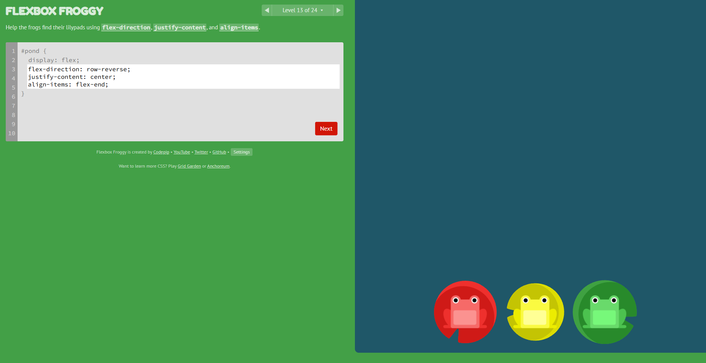
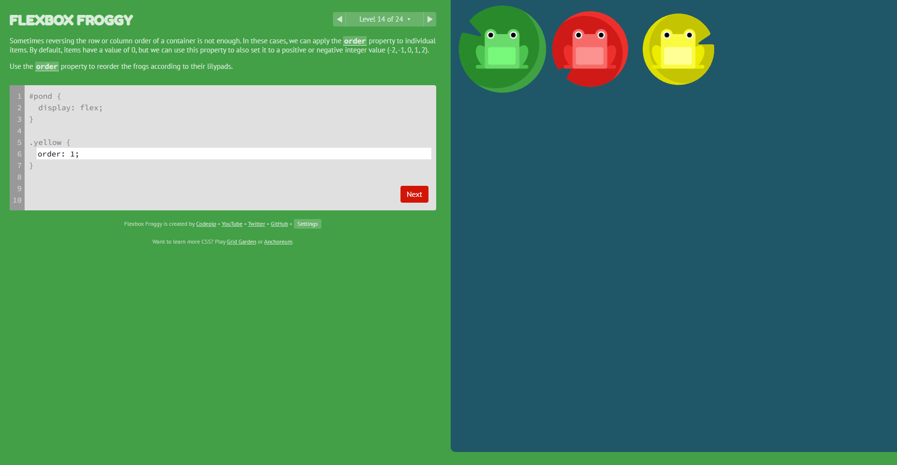

A fase 13 do jogo deve usar os seguintes comandos
#pond {
display: flex;
flex-direction: row-reverse;
justify-content: center;
align-items: flex-end;
}
O flex direction faz a linha inverter as posições, o justify-content faz os sapos centralizarem e o
align-items faz os sapos ficarem na parte de baixo da tela.
A fase 14 do jogo deve usar os seguintes comandos
#pond {
display: flex;
}
.yellow {
order: 1;
}
O order faz com que o sapo amarelo fique na frente dos outros sapos, mesmo estando no final da lista.